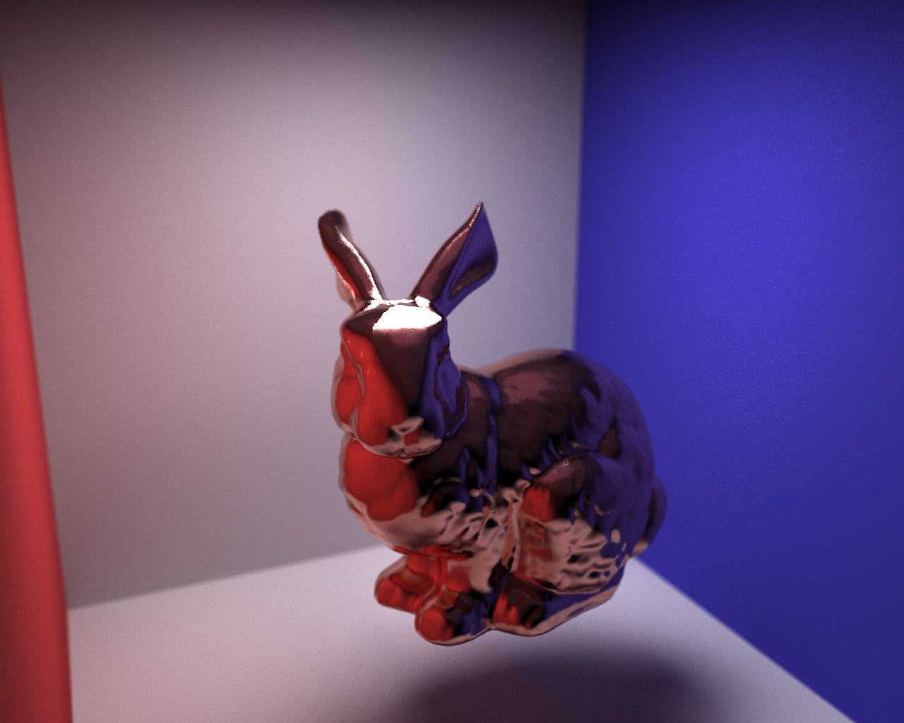

What we have accomplished:
We have finished most of our CUDA-accelerated raytracer. To begin with, we highly optimized our part 3 code, writing a spatially optimal BVH implementation, using floats instead of doubles, speeding up intersection tests, and using iterative ray bouncing instead of recursive. We then converted the code to utilize our GPU’s CUDA cores. This was a significant undertaking, and required refactoring much of the codebase.
For our other parts, we have done brainstorming on how we want the flame physics system to work, using the Navier Stokes model and applying it to the particles. We have been researching what the best visualizer for the particles as primitives could be, considering keeping them as spheres and merging spheres if they are close enough, or creating a mesh of the flame particles.
Preliminary results:
Compared to multi-threaded CPU ray tracing, our CUDA-accelerated implementation was 10 to 100 times faster. Raw BVH intersections were an average of 120x faster.
|  |
Progress reflection:
After we had distributed parts and began thinking of how we wanted to implement each system, we realized that our distribution of responsibilities was not balanced well, so we re-assessed the major parts to work on, as follows:
-Physics model for the flames (using Navier Stokes, modeling the behavior of the flames and handling all of the particles and their properties)
-Visualizer system to convert the physics model output (ie all of the particles) into primitives for the ray tracer. This will need to consider whether the particles should be kept as individual spheres or create some sort of mesh.
-CUDA accelerated ray tracer to output the image, and stitching images together to create animated gifs
The CUDA accelerated ray tracer portion is almost completely done, so we have the physics and visualizer systems remaining. We are a bit behind our original proposal since we needed to revise the major systems and work distribution, so we will be working a bit more these coming 2 weeks before the final presentation.
Updated work plan:
Week 4 (4/24) - Milestone Deliverables (due 4/25):
-Work on subparts:
-Physics system
-Visualizer system
Week 5 (5/1): Presentations and Final Project Deliverables (due 5/4)
-Finish any in-progress subparts
-Render sequences of images in order to create animations of the flame
-Prepare for presentation & submit final deliverables
Video and Slides:
View our video here.
View our presentation slides here.